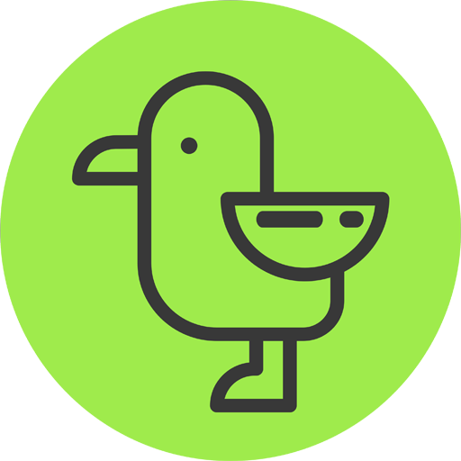
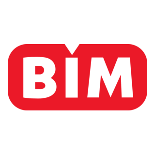

Computer Engineering Student & Software / AI Developer
Building things at the intersection of software engineering and applied AI — currently exploring RAG pipelines, local LLM architectures, and clean backend systems.
I'm a Computer Engineering student who splits my time between traditional software development and applied AI research. I like building things that are fast, sharp, and useful — from backend architectures to retrieval-augmented pipelines.
My current focus is on RAG systems and local LLMs — figuring out how to run capable, private, and efficient AI on constrained hardware, and how to wire that intelligence into real products.
Outside of coursework, I'm usually deep in a side project, an internship, or reading through a paper trying to understand why something works the way it does.

Martı İleri Teknoloji
Currently training and fine-tuning machine learning models, developing data-driven solutions, and shipping production-ready features as part of a cross-functional BI & data team.
Microsoft
Selected for Microsoft's AI Summer Innovators program, where I attended sessions and mentoring meetings with Microsoft professionals and built a self-directed machine learning project — a stock price prediction model — from the ground up. The program gave me my first solid foundation in ML.
Y İnovasyon
Working on AI product development with a focus on retrieval-augmented generation systems and local LLM architectures — designing pipelines that balance performance, privacy, and cost.

BİM Bilişim Teknolojileri Ofisi
Contributed to software development projects, gaining hands-on experience with backend systems, version control workflows, and collaborative engineering practices.
A machine learning model that predicts stock price movement, built during Microsoft's AI Summer Innovators program — my first end-to-end ML project.
A retrieval-augmented generation pipeline running entirely on local hardware, pairing a lightweight local LLM with a custom document retriever.
A collection of C++ and Python utilities built throughout my Computer Engineering coursework, covering data structures, algorithms, and systems programming.